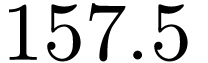
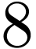
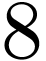
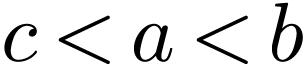
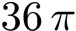
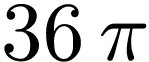

若集合， ，则()
，则()
A. |
B. |
C. |
D. |
若，则()
A. |
B. |
C. |
D. |


在中，点 在边上，.记，，则()
在边上，.记，，则()
A. |
B. |
C. |
D. |

南水北调工程缓解了北方一些地区水资源短缺问题，其中一部分水蓄入某水库.已知该水库水位为海拔148.5m时，相应水面的面积为;水位为海拔m时，相应水面的面积为.将该水库在这两个水位间的形状看作一个棱台，则该水库水位从海拔m上升到m时，增加的水量约为()
A. |
B. |
C. |
D. |
从 至的个整数中随机取个不同的数，则这个数互质的概率为()
至的个整数中随机取个不同的数，则这个数互质的概率为()
A. |
B. |
C. |
D. |


记函数的最小正周期为 .若，且
.若，且 的图像关于点中心对称，则()
的图像关于点中心对称，则()
A. |
B. |
C. |
D. |
设，，，则()
A. |
B. |
C.  |
D. |

已知正四棱锥的侧棱长为 ，其各顶点都在同一个球面上，若该球的体积为，且，则该正四棱锥体积的取值范围是()
，其各顶点都在同一个球面上，若该球的体积为，且，则该正四棱锥体积的取值范围是()
| A. | B. |
C. |
D. |
 ，则(
，则( 有两个极值点
有两个极值点 是曲线
是曲线 是曲线
是曲线 为坐标原点，点
为坐标原点，点 于
于 ，
， 两点，则(
两点，则(
 的定义域为
的定义域为 ，记
，记 .若
.若
 和
和 的取值范围是
的取值范围是 ，两个焦点为
，两个焦点为 ，
， 两点，
两点， 为数列
为数列 的前
的前 项和，已知
项和，已知 ，
， ，
， ，
， ，已知
，已知 ，求
，求 ，
， 的中点，
的中点， ，求二面角
，求二面角 卫生习惯分为良好和不够良好两类
卫生习惯分为良好和不够良好两类 的关系，在已患该疾病的病例中随机调查了
的关系，在已患该疾病的病例中随机调查了 证明：
证明： ．
．
 有相同的最小值．
有相同的最小值．